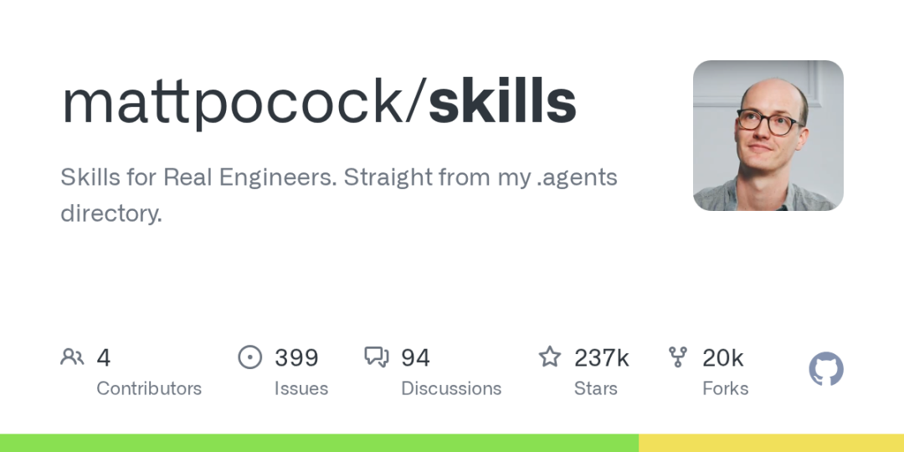
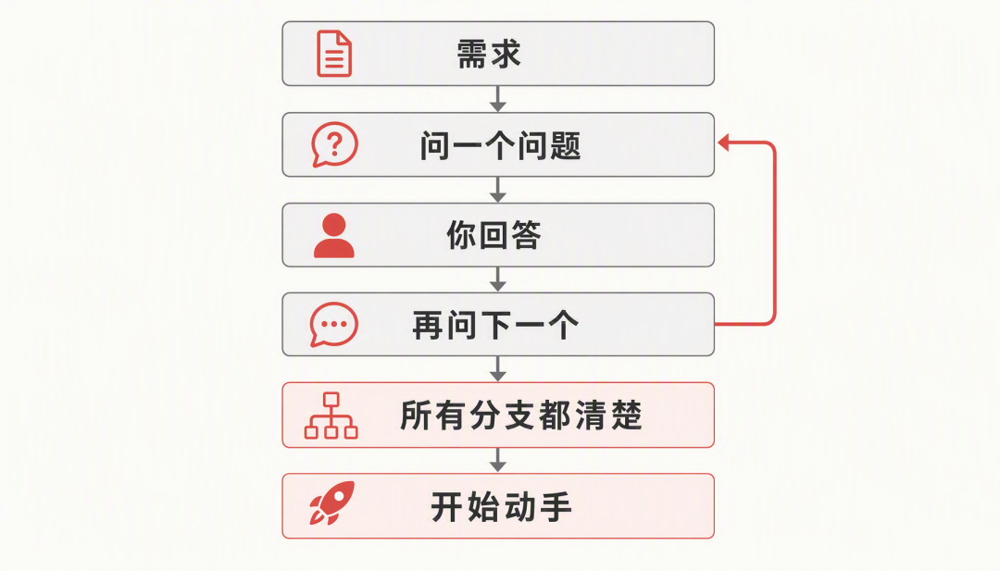
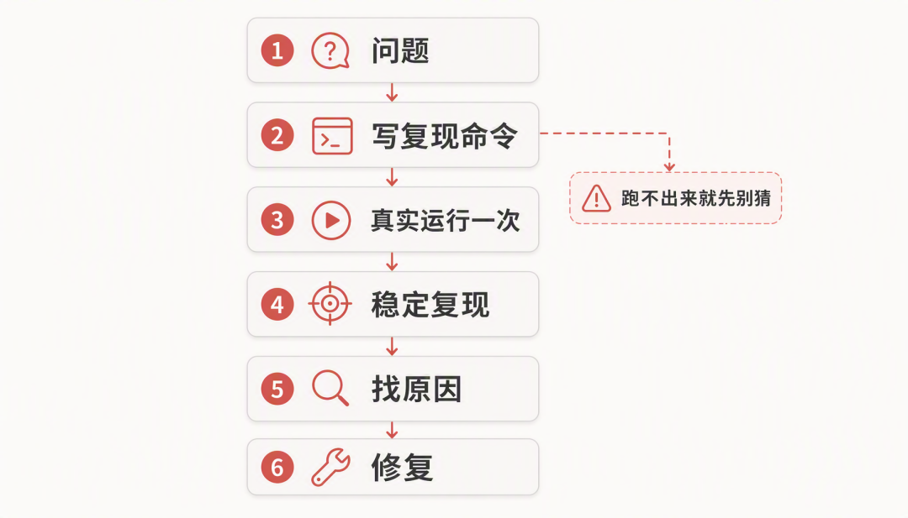
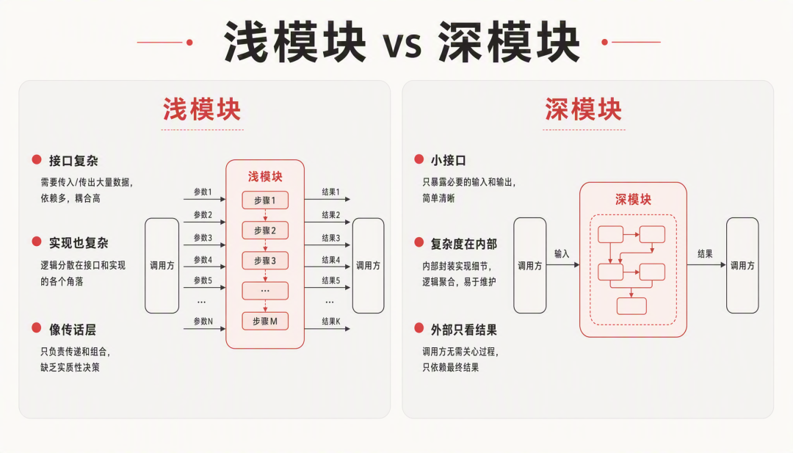
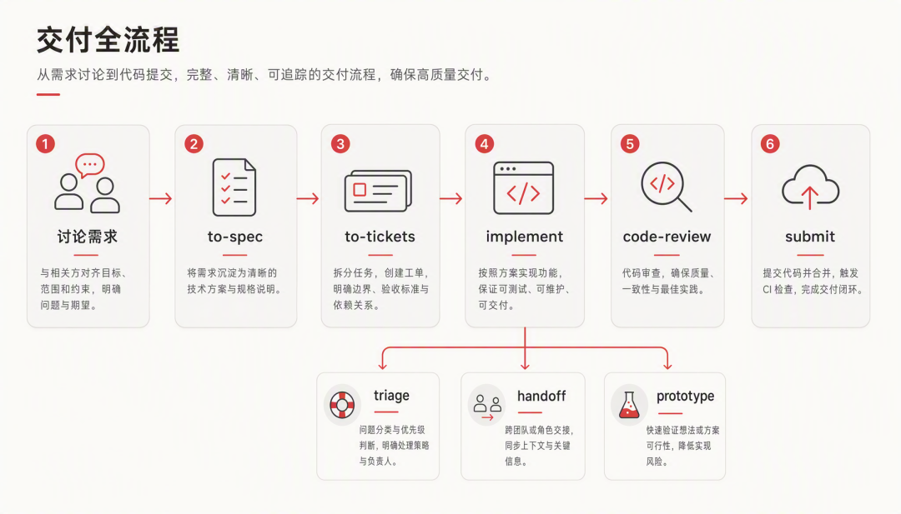

说个我自己这段时间的感受，用 AI 写代码，返工最多的情况都差不多：需求我说得挺清楚，它做得也挺快，结果出来一看，根本不是我要的那个东西。我翻过自己的返工记录，多数时候跟模型聪不聪明关系不大，是我和它之间少了一套干活的规矩，需求没问透，写完也没验。
Matt Pocock 的做法很直接，他把自己每天在用的那套规矩整理出来开源了，就是今天我们要聊的这个仓库，mattpocock/skills。
这个仓库到底是什么
先说说 Matt Pocock 这个人，他是 Total TypeScript 的作者，TypeScript 圈子里最有名的教育者之一，之前在 Vercel 和 Stately 做过工程师，写了十几年代码。
这个仓库说起来也简单，他把自己 .agents 目录里每天在用的 skill 文件原样公开了。这些内容是他自己日常干活在用的，公开出来基本没怎么包装。
先解释下 skill 是什么，老生常谈一下，一个 skill 就是一个文件夹，里面放一份说明文档，告诉 AI 某一类活要按什么流程干。用的时候敲个 /tdd 这样的命令把它喊出来，也可以让 AI 自己判断该不该用。它跟 CLAUDE.md 那种每次都加载的项目说明还不一样，skill 只在被触发的那次会话里加载，平时不占上下文。
这个仓库现在 23.8 万 Star，2 万多 Fork，MIT 协议，随便用。在 skills.sh 上挂着 53 个 skill，加起来被装了 1800 多万次，是目前安装量最高的一套技能集。

它和 Spec Kit、BMAD 这些项目不太一样。那些项目的思路是让流程接管一切，你跟着走就行，Matt 这套正好反过来，每个 skill 都很小，只干一件事，用哪个、什么时候用，全由你说了算。
这套技能都能干什么
仓库里的 skill 有五十来个，但真正日常高频用的就二十多个，我按干活的顺序把它们分成四组，一组一组说。
动手之前，先把需求问清楚
/grill-me 和 /grill-with-docs，这是整个仓库最火的两个 skill，光 grill-me 一个就被装了九十多万次。它们干的事就一件，在你动手写代码之前，让 AI 反过来盘问你。
注意是 AI 问你，不是你问它，它会把你需求里没想清楚的岔路一个一个问出来，一次只问一个，一直问到每条岔路都有答案为止。我实际用下来，经常被它问住，很多想当然的地方都是被这么问出来的。/grill-with-docs 在这个基础上多干一件事，盘问的过程中，它会把项目里的术语整理进一个叫 CONTEXT.md 的文件，把那些不好撤销的技术决策写成 ADR 文档存下来。

CONTEXT.md 值得单独说一说。没有它的时候，同样的问题你得跟 AI 这么解释：「课程里某个章节下的课时，被变成真实文件的时候出了点问题」。有了它，一句话就够了：「materialization cascade 出了个问题」。意思没变，话短了很多，而且这个词一旦定下来，AI 后面写代码也会照着用，变量名、文件名自然是同一套叫法，不用每次都重新掰扯。
/ask-matt，五十多个 skill 看着眼晕，不知道哪个适合自己的情况，就直接问它，它会根据你描述的情况帮你挑一个。
写代码的时候，测试和排错都有规矩
/tdd，测试驱动开发，先写一个注定失败的测试，再写刚好够它通过的实现，一次只切一小片。它专门防一种很常见的假 TDD，就是先把所有测试写完再写所有实现，那样测的全是你想象出来的形状，不是真实行为。
/diagnosing-bugs，排查 bug 用的。它的规矩很硬，必须先造出一条能稳定复现问题的命令，并且真的跑过一次，才允许进入猜原因的阶段。跑不出来就不许猜。这条规矩我觉得直接抄进团队的 bug 模板里都不过分。

/code-review，提交前的检查。一边看代码有没有遵守项目自己定的规范，一边看它是不是真的实现了当初的需求，两边分开跑，谁也不干扰谁。
管住代码库，别让它越写越乱
/improve-codebase-architecture，AI 写代码快，代码变乱也快。这个 skill 会扫一遍整个仓库，找出那些值得收拾的模块，生成一份 HTML 报告摆在你面前，你挑一个想改的，它会针对这个候选继续跟你讨论怎么改。Matt 建议隔几天就跑一次，它只负责把候选找出来给你看，不会自作主张动手重构。
它背后用的是「深模块、浅模块」那套经典理论。浅模块的接口和实现一样复杂，基本就是个传话的，这种就是它要揪出来的对象。

把一个完整需求串成流程
前面这些 skill 都是单个的，下面这几个负责把流程串起来。

一个需求从讨论到提交，中间这几步它们各管一段：
• /to-spec：聊得差不多了，直接把当前对话整理成一份规格说明，发到 issue 跟踪器里。它不会再追问你，只把已经聊过的东西收拢成文档。• /to-tickets：把规格拆成一张张工单，每张都标清楚谁阻塞谁，先干什么后干什么。• /implement：照着规格或工单开始干活，中间自动走/tdd的节奏，提交之前再过一遍/code-review。• /triage：issue 一多就需要分诊，它按一套状态机把 issue 一个个过一遍。• /handoff：会话聊得太长、AI 开始变迟钝的时候，把当前进度压成一份交接文档，开一个新会话接着干，甚至丢给另一个工具接着干。• /prototype：遇到那种说不清、必须亲眼看到的问题，先做个一次性的原型看看，看完就扔，它不允许你把原型写成半成品留在仓库里。
安装很简单
用 Claude Code 的话，一行命令：
claude plugins install mattpocock-skills官方插件市场里就有，不用先加什么源，这条路线是订阅式的，只读，以后作者更新我们这边自动跟上。
想自己改 skill 文件的，走另一条：
npx skills@latest add mattpocock/skills它会把 skill 文件复制进项目里，变成了我们自己的文件，随便改。两条路选一个就行，都走的话每个 skill 会装两份。
装完记得跑一次 /setup-matt-pocock-skills，每个仓库跑一次就够。它会问我们几个小问题，issue 放在哪、triage 用什么标签、文档存哪个目录，跑完这一步，其他 skill 才有地方写东西。
顺带说一句，这套东西不挑模型。README 里写明了 work with any model，装的时候可以选装到哪个工具上，Codex 也好、其他支持 Agent Skills 规范的客户端也好，都能用。
什么情况下值得拿出来用
说几个我自己觉得对得上号的场景。
• 接新需求的时候。 需求越模糊，grill 系列的价值越大，我自己体会是，盘问那半小时看着烦，但比起写完再返工，还是划算得多。 • bug 复现不出来的时候。 与其盯着代码猜，不如让 /diagnosing-bugs逼着我们先把复现命令造出来。很多查了好几天没结果的 bug，回头看都是这一步被跳过去了。• 老项目越改越乱的时候。 隔几天跑一次 /improve-codebase-architecture，让它把值得收拾的地方列出来，我们挑着改。• 还有不写代码的事。 /grill-me不看代码也能用，写方案、做决策、想产品点子，让它盘你一轮，比自己闷头想要扎实。
反过来，什么时候用不上？
就想快速糊个 demo、写个一次性脚本，那这套东西对你就是负担，直接让 AI 写就完了。Matt 在 README 里也写得很明白，这些 skill 是他拿来做真实工程的，vibe coding 用不上这套。
我的看法
这个仓库我翻完以后，印象最深的一点是，里面其实没有什么新东西。
盘问需求、测试先行、统一语言、ADR、原型验证，全是软件工程里讲了二三十年的老规矩。这个开源项目做的事，说白了就是把这些老规矩写成 AI 能照着执行的文件。
这些做法单拎出来都不新鲜，不过我还是挺认这个方向。我现在用 AI 写代码，会不会写早就不成问题了，真正头疼的是它写得太快，快到以前那些老问题全被放大了。需求没说清、代码越堆越乱，代价都比以前大不少。这种时候，反而是这些老规矩管用。
另外还有一点我觉得做得对，它不把流程做成黑盒。所有 skill 都是纯文本，摆在仓库里，你看不顺眼就 fork 一份自己改。跟那些想替你做完所有决策的框架比，这种把判断权留给人自己的做法，我觉得非常好。
别一次全装，挑一两个最对症的先试。我自己是从 /grill-with-docs 开始的，它是这套东西的入口，用顺手了再往下加。
开源地址
https://github.com/mattpocock/skills
这个公众号长期分享实用开源项目。如果你不想逐篇翻阅历史文章，可以直接关注微信公众号“极客之家”，通过后台留言与我们互动交流。